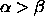

The RM_Random_Weights function initializes the bias and all
weights of all units which are not input-units with a random value.
This value is selected from the interval  .
.  and
and  have to be provided in field1 and field2 of the init
panel.
have to be provided in field1 and field2 of the init
panel.

has to hold.